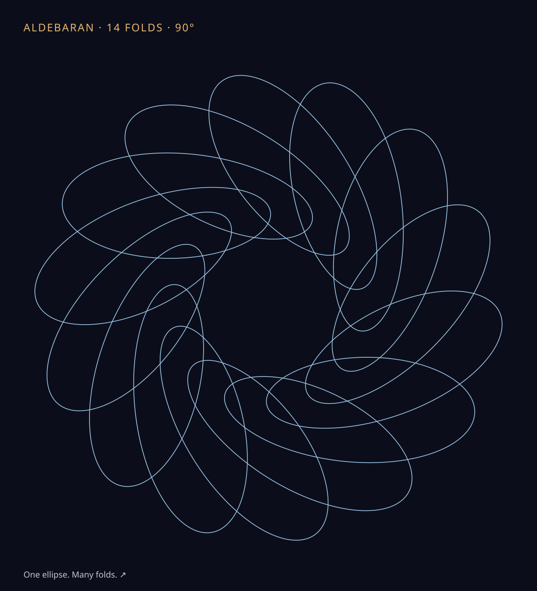

One ellipse.
Many folds.
Turn the backward arm’s starting angle. Petals become rings. Their folds stay. Inside each drawing, the same little ellipse keeps going around.
The lengths stay 245, 140, and 65. Each panel keeps its own scale, with equal scales on its two axes. Nothing animates.
The whole drawing
Inside one repeat
One circuit of the ellipse makes one repeat of the drawing.
Distance from center
First arm’s turn
Whole drawing’s radial reach


Why an ellipse? Why do the folds stay?
The first arm makes one turn. Choose d folds: the next arm makes d + 1 forward turns, and the last makes d − 1 backward turns. In the first arm’s moving frame, those last two arms turn equally fast in opposite directions.
Two circles turning oppositely make an ellipse. Its long radius is their sum, 140 + 65 = 205; its short radius is their difference, 140 − 65 = 75. Turning the backward arm’s starting angle rotates this ellipse by half that angle, around the end of the first arm.
While the point goes once around the ellipse, the first arm advances 1/d of a turn. The next repeat is the same path, rotated by that amount. Changing the starting angle leaves this rule intact. Follow the factorization and the exact radius bounds ↗.
The center opens. What else stays?
At 0°, the drawing reaches inward to radius 40 and outward to 450. At 180°, its inner radius is 170 and its outer radius is about 333.66. These full radial ranges depend on the ellipse, so they are the same at every fold count shown here.
The inner edge moves strictly outward through the half-turn; the outer edge moves strictly inward. The smallest concentric annulus containing the line steadily tightens. Why both edges move one way ↗.
Add more folds at one starting angle, and the line approaches every point in that annulus. At a half turn, 1,049 folds are enough to come within one drawing unit of every annulus point. This is a sufficient bound. Watch a line approach a band ↗.
At each fixed fold count, the signed area also stays unchanged as the starting angle turns. That counts every region with its winding multiplicity; it differs from the visible ink or the area of a filled silhouette.
The smooth curve keeps moving, with no stationary point, through the entire half-turn. Its crossings can change. The drawn lines are sampled illustrations; a separate exact census accounts for every touch and triple in the sevenfold and fourteenfold families.